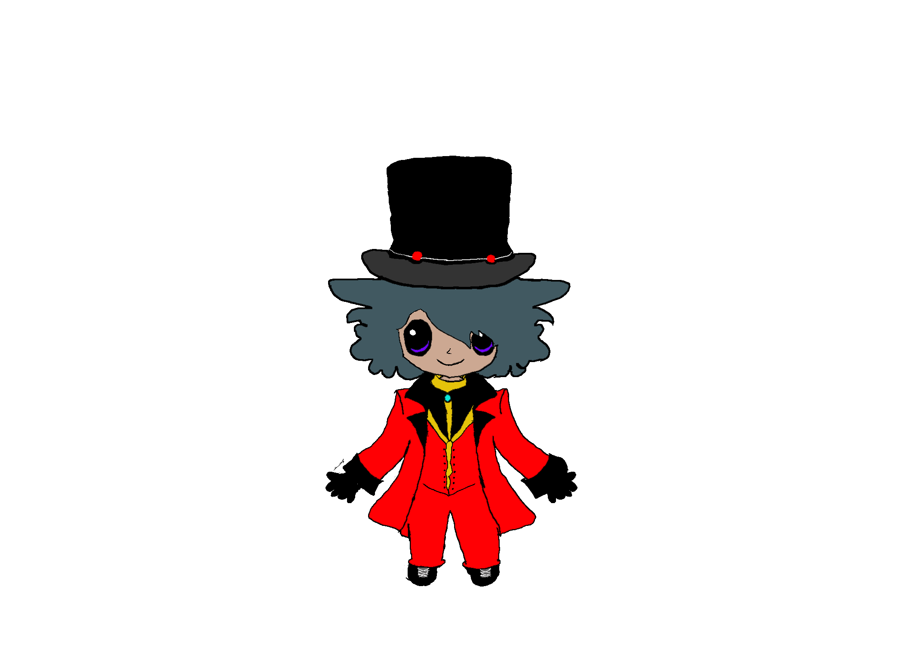
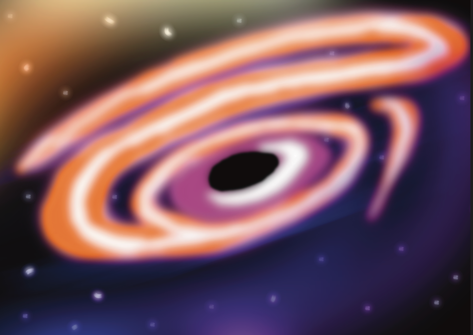
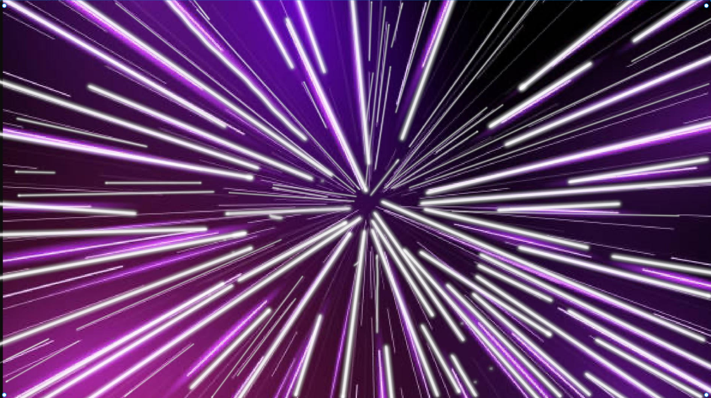

Quantum Circus
An interactive comic experience designed to make quantum mechanics accessible and exciting for a younger audience. Rather than textbooks and equations, we used the spectacle of a traveling circus — where every act is a different quantum mechanic brought to life. Superposition, entanglement, wave-particle duality — each one becomes a performance under the big top.
About the Project
Quantum Circus was built as a team project with the goal of making quantum mechanics genuinely understandable to a younger audience — without dumbing it down. The core idea was that quantum physics is already strange, unpredictable, and spectacular, so a circus was the perfect setting. Each act in the comic maps directly to a real quantum concept, giving the audience an intuitive way to experience ideas that would otherwise feel completely abstract.
As team lead, I was responsible for coordinating the team across art, design, and development — keeping everyone aligned on the vision, managing the scope of each act, and making sure the final product held together as a cohesive experience. Leading this project pushed me to think beyond my individual contributions and focus on how all the pieces fit together.
The Concept
The circus theme wasn't just aesthetic — it was structural. Every quantum mechanic we wanted to explain became its own circus act, with a character and performance built around it. The Magician demonstrated Schrödinger's Cat — the outcome of the act unknown until the moment of observation. The ringmaster, the Chibi Curator, guided the audience between acts, keeping the tone playful while grounding each performance in real science.
The result was a comic where kids could experience quantum weirdness firsthand through interaction, rather than just reading about it. Each act was designed so the mechanic was felt before it was explained — making the science stick in a way that a textbook never could.
My Contributions
Team Lead
I led the team across the full production — coordinating art, design, and development, running check-ins, managing the project timeline, and making final calls on creative direction. This was my first time leading a project of this scale and it taught me as much about communication and planning as it did about building.
Chibi Curator — Character Design
I designed and created the Chibi Curator from scratch in Photoshop. The Curator is the guide character who introduces each act and connects the audience to the story. The design needed to feel approachable and fun for a younger audience while still fitting the circus world — I went through several iterations before landing on the final look.
Magician Act — Schrödinger's Cat
I designed the Magician mechanic, which was used to demonstrate Schrödinger's Cat theory. The act was built around the idea that the outcome is unknown until observed — the audience interacts with the performance without knowing the result until the moment of reveal. This gave players a hands-on experience of superposition rather than just a definition.
Artwork





Click any image to expand